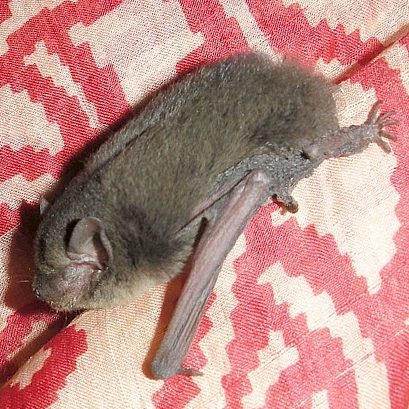

चमगादड़ीIndian Pipistrelle
Pipistrellus coromandra · Vespertilionidae · MAM-0014

- Scientific name
- Pipistrellus coromandra (Gray, 1838)
- Family
- Vespertilionidae
- Hindi
- चमगादड़ी
- Status here
- native
- IUCN
- LC
When to look कब देखें
Present all year.
चमगादड़ी / Indian Pipistrelle
Pipistrellus coromandra (Gray, 1838) — Vespertilionidae
चमगादड़ी (इंडियन पिपिस्ट्रेल) — पूर्वी उत्तर प्रदेश के ग्रामीण घरों, पुरानी इमारतों और पेड़ों की छाल के नीचे पाया जाने वाला एक अत्यंत छोटा और बहुत ही सामान्य निवासी चमगादड़ (microbat) है। यह घरों की छतों, खपरैलों की दरारों और दीवारों के छिद्रों में निवास करता है। रात के समय सक्रिय (nocturnal) होने वाला यह जीव हवा में उड़ने वाले कीड़ों, विशेष रूप से मच्छरों का शिकार करता है। एक छोटी चमगादड़ी हर घंटे सैकड़ों मच्छरों को खा सकती है, जिससे यह मानव बस्तियों में बीमारियों के प्रसार को रोकने वाली एक महत्वपूर्ण मित्र जीव है। यह हवा में उड़ते समय 45 से 55 किलोहर्ट्ज़ (kHz) की आवृत्ति पर पराश्रव्य ध्वनि (ultrasonic echolocation calls) उत्पन्न करती है, जो इंसानों को सुनाई नहीं देती। वन्यजीव (संरक्षण) अधिनियम, 1972 की अनुसूची IV के तहत इसे कानूनी सुरक्षा प्राप्त है।
Quick Identification त्वरित पहचान
| Feature | Description |
|---|---|
| Size | Tiny, mouse-sized bat; head-body length 38–45 mm; forearm length 28–31 mm |
| Forearm | Small forearm (28–31 mm), distinguishing it from larger insectivorous bats |
| Fur | Soft and dense; dark grey-brown to chocolate-brown dorsally; slightly lighter below |
| Wings | Thin, dark brown wing membranes (patagium) extending to the base of the toes |
| Ears | Small, rounded ears with a distinct, short, curved inner ear flap (tragus) |
| Flight | Fluttering, erratic, and zigzag flight pattern close to tree canopies and roofs at dusk |
Field tip: Watch the sky just after sunset (dusk) near village houses or old orchards. Look for tiny, mouse-sized creatures flying with rapid, erratic, jerky, and zigzag movements close to trees or roofs. If you listen closely, you cannot hear their hunting calls, as they are ultrasonic.
Morphology आकारिकी
Biometrics (typical measurements for adult specimens in local residential areas):
| Measurement | Range |
|---|---|
| Head-body length | 38–45 mm |
| Tail length | 30–35 mm |
| Forearm length | 28–31 mm |
| Weight | 3.5–5.5 g |
Body details: The head features a broad muzzle with glandular swellings on the sides. The eyes are tiny. The ears are short, triangular, and rounded at the tips, with a tragus that is about half the length of the ear. The dorsal fur is soft and rich brown, while the belly is paler buff-brown. The wing membranes are dark, naked, and attach at the base of the claws. The tail is long, fully enclosed by the interfemoral membrane except for the extreme tip. The key morphological marker for field identification is the forearm length, which remains under 31 mm.
Behaviour & Ecology व्यवहार और पारिस्थितिकी
Colonial house-dweller.
- Roosting behavior: Lives in small colonies of 5–20 individuals. They squeeze into tight, dark crevices, such as beneath clay roof tiles (khaprail), behind wooden ceiling rafters, and inside wall cavities.
- Crepuscular emergence: Emerges early, often before it is fully dark. They fly back and forth along set paths under tree canopies or around streetlights to feed.
- Winter torpor: During the cold weeks of December and January in Basti, they enter a state of shallow torpor inside roost cracks to conserve energy when insect numbers are low.
Vocalisations
- Echolocation: Emits ultrasonic, frequency-modulated search pulses with a peak frequency of 45–55 kHz. These calls are used to navigate and locate insects in dark air and are completely inaudible to human ears.
- Audible communication: Inside the roosts, they produce faint, high-pitched scratching clicks and metallic squeaks during territorial squabbles or when disturbed by predators.
Ecological Role पारिस्थितिक भूमिका
Insect population regulator.
- Pest controller: Feeds exclusively on nocturnal flying insects. A single pipistrelle can consume up to 500–1000 small insects (including mosquitoes) per hour of flight.
- Vector reduction: Directly limits populations of malaria- and filariasis-carrying mosquitoes in human settlements.
Life Cycle / Phenology जीवन चक्र
- Breeding: Mating takes place in late winter (February). Sperm is stored by the female during hibernation, and fertilization occurs in spring.
- Births: Females give birth to twins (sometimes a single pup) in May or June.
- Development: Pups are born blind and naked, clinging to the mother's chest. They are left in the roost when the mother hunts. They open their eyes in 10 days, start flying in 3 weeks, and are completely independent by 5 weeks.
Host Plants or Prey आहार
Prey:
- Flying mosquitoes (such as [INS-0035 Southern House Mosquito]).
- Micro-moths, midges, termites, and small flying beetles.
Predators / Natural Enemies शत्रु
- Nocturnal birds: Spotted Owlets (such as [BRD-0004 Spotted Owlet] - check ID) and Barn Owls ambush them as they emerge from roosts.
- Reptiles: Common Wolf Snakes (such as [REP-0012 Common Wolf Snake]) hunt them inside wall cracks.
- Domestic predators: House cats capture low-flying bats near verandahs.
Agricultural / Human Relevance कृषि प्रासंगिकता
Natural pest controller and guano source.
- Mosquito defense: Their high consumption of mosquitoes near rural homes significantly improves public health and sleeping comfort.
- Guano harvest: Roosts in old attics produce deposits of dry bat droppings (guano). This guano is highly rich in nitrogen and phosphorus, collected by local gardeners as a fertilizer.
- Legal status: Protected under Schedule IV of the Wildlife Protection Act, 1972, making capture or killing illegal.
Expected Locally स्थानीय रूप से अपेक्षित
Not a field record. Written from published accounts for eastern Uttar Pradesh. No confirmed local sighting yet — if you have seen it, that is what the atlas needs.
अभी तक स्थानीय पुष्टि नहीं। यह विवरण प्रकाशित स्रोतों से है, किसी अवलोकन से नहीं।
Commonly found in all blocks of Basti district, especially in rural clay-tile houses (khaprail ka ghar) in Vikramjot and Kaptanganj. At dusk, they are easily observed darting around village ponds (pokhra) feeding on emerging midges.
Distribution वितरण
Global range: Widespread across South Asia, covering Afghanistan, Pakistan, India, Nepal, Bhutan, Bangladesh, and Sri Lanka.
In India: Found across all states, plains, and hilly tracts up to moderate altitudes.
In Uttar Pradesh: Abundant resident across all rural, semi-urban, and urban districts.
In Basti district / eastern UP: Observed in all residential and agricultural blocks.
Research Questions शोध प्रश्न
Anyone can investigate these | कोई भी इन प्रश्नों की जाँच कर सकता है
- What is the average number of Indian Pipistrelles in a typical roost found in rural Basti khaprail homes? / ग्रामीण बस्ती के खपरैल घरों में पाए जाने वाले एक सामान्य बसेरे (roost) में भारतीय चमगादड़ी की औसत संख्या क्या होती है? — Count emerging bats at dusk from a selected roof exit.
- Does the foraging activity of pipistrelles increase in areas with organic farms compared to pesticide-heavy farms? / क्या कीटनाशकों के भारी उपयोग वाले खेतों की तुलना में जैविक खेतों में चमगादड़ियों की भोजन खोजने की गतिविधि बढ़ जाती है? — Compare visual bat counts over similar plots.
- At what time after sunset does the first wave of bats emerge from their roost in different seasons? — Record emergence times relative to local sunset charts.
- Do bats use the same roosting cracks year-round or do they rotate roosts seasonally? — Monitor occupancies of marked cracks monthly.
- Can children count the number of bats they see flying past a specific street lamp or tree in 10 minutes at dusk? — A simple visual census project for students.
Similar Species मिलती-जुलती प्रजातियाँ
| Species | Key Difference | हिंदी |
|---|---|---|
| Pteropus medius (Indian Flying Fox) | Giant fruit bat; wingspan up to 1.2 metres; lacks echolocation; roosts openly in tall trees; feeds on fruits | बड़ा चमगादड़ / बड़गादुर — विशाल आकार, फलहारी |
| Pipistrellus paterculus (Mount Popa Pipistrelle) | Slightly larger forearm (31–36 mm); minor dental differences; rare in the eastern plains | पहाड़ी चमगादड़ी — बड़ा Forearm |
| Scotophilus heathi (Greater Yellow House Bat) | Much larger (head-body 70–90 mm); bright yellowish-brown belly fur; slower, steadier flight | पीला चमगादड़ — बड़ा आकार, पीला पेट |
Field rule: Tiny size (forearm length under 31 mm), dark brown fur, rapid zigzag flight close to structures at dusk, and ultrasonic hunting calls identify the Indian Pipistrelle.
Taxonomy & Classification वर्गीकरण
Original description. John Edward Gray described the Indian Pipistrelle as Scotophilus coromandra in 1838 in Magazine of Zoology and Botany (Vol. 2, p. 498). The type locality was the Coromandel coast, India. The genus name Pipistrellus is derived from the Italian pipistrello, meaning "bat". The specific name coromandra refers to the Coromandel region.
Subspecies. Pipistrellus coromandra coromandra is the nominate subspecies present in northern India.
Family and order placement. Placed in the order Chiroptera, suborder Yangochiroptera, family Vespertilionidae (vesper bats), subfamily Vespertilioninae.
Phylogenetic notes. Pipistrellus coromandra belongs to a species complex of small vespertilionids that developed highly efficient echolocation and flight parameters to exploit insect resource niches in human-dominated environments.
IUCN status rationale. Listed as Least Concern (LC) by the IUCN due to its vast geographic distribution, large population, high adaptability to human-made structures, and lack of conservation threats.
Photo Gallery फोटो गैलरी
References संदर्भ
- Gray, J. E. (1838). A synopsis of the species of the class Mammalia. Magazine of Zoology and Botany, 2, 483-505. [original description]
- Blanford, W. T. (1888). The Fauna of British India, including Ceylon and Burma. Mammalia. Taylor and Francis, London, p. 295.
- Prater, S. H. (1971). The Book of Indian Animals. Bombay Natural History Society, Bombay.
- Bates, P. J. J., & Harrison, D. L. (1997). Bats of the Indian Subcontinent. Harrison Zoological Museum, Sevenoaks, Kent.
- ZSI Checklist — Chiroptera of Uttar Pradesh (2014).
- IUCN SSC Bat Specialist Group (2020). Pipistrellus coromandra. The IUCN Red List of Threatened Species. Version 2020-3. IUCN, Gland, Switzerland.
- GBIF Occurrence Data — Pipistrellus coromandra, Uttar Pradesh (2010–2025).
Source file: species/fauna/mammals/indian_pipistrelle.md